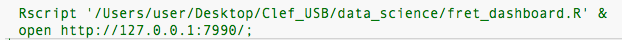
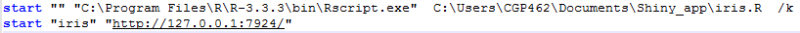

Launch shiny from a shortcut
April 10, 2017 by Kevin Rosamont
Hello,
In this post I will explain how to launch a shiny application from a shortcut. just like that:
It’s short and usefull if you work with colleagues that don’t know a clue about R and just want to use your shiny app. I suggest you to follow this guide. Your colleagues will double click on the shortcut and directly be in front of their application.
If you are on MAC:
Open a text editor and write the following lines : Rscript '&FullPath/&file.R' &
open http://127.0.0.1:&PortNumber/;
& allows you to write more command lines even if the shell is still busy with the previous line. The second line open your web browser with the chosen address. A concrete example gives that: 
On the second line, 7990 refers to the choosen port in your shiny app. If you haven’t choosen one, go back to the file where you have wrote the application and add to shinyApp: options = list(port= 7990), just like that:
shinyApp(ui=ui,server=server, options = list(port=7990))
if you use a .Rmd document, you should write this:
Rscript -e "rmarkdown::run('&FullPath/&file.Rmd', shiny_args = list(port=&PortNumber))" &
open http://127.0.0.1:&PortNumber/&file.Rmd;
Replace &FullPath, &file and &PortNumber by the file path, the file name and the chosen port.
Then save it with the ”.command” extension and try to launch your shiny application from the shortcut. if you have a message saying that the file could not be executed because you do not have appropriate access privileges, open your terminal and write the following line:
chmod u+x &FullPath/&file.command
Then it should work :)
We are almost done, now we have to add another shortcut icon to make it look more user friendly. For that, go on google and download free .icns icons. I have download some icons on easyicon.
To change the icon you just need to go in “get info” and drag your new icon to the previous one, just like bellow:
If you are on Windows:
Open a text editor and write the following lines:start "" "&FullPath1\Rscript.exe" &FullPath2\&file.R /k
start "Name" "http://127.0.0.1:&PortNumber/"
/k allows you to write something in the command prompt even if the Prompt is busy with the previous line. A concrete example gives that : 
Then you can save your file with a .bat extension.
Be carefull, if you want to launch a .Rmd you should use this code instead :
start "&FullPath1\R.exe" -e "Sys.setenv(RSTUDIO_PANDOC='C:/Program Files/RStudio/bin/pandoc'); rmarkdown::run('&FullPath2/&file.Rmd', shiny_args = list(port =&PortNumber, launch.browser = FALSE))" /k
start "&file" "http://127.0.0.1:7924/&file.Rmd"
if it doesn’t work, check your pandoc location.
It’s almost done. Now we have to change the icon. first you have to download an icon with the .ico extension. then you have to act in 4 steps :
1. Right click on your file and go in Properties.
2. Choose the Shortcut tab.
3. Then go in Change Icon….
4. In Browse, select the icon you want to see instead.

And now it’s done!
Don’t hesitate to contact me if you have any comments or suggestions.